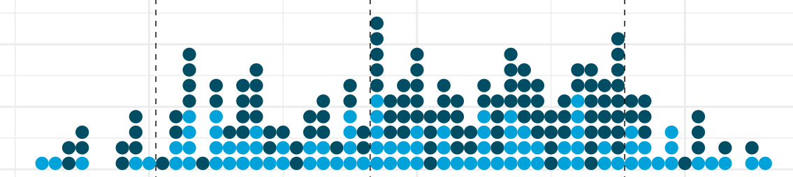
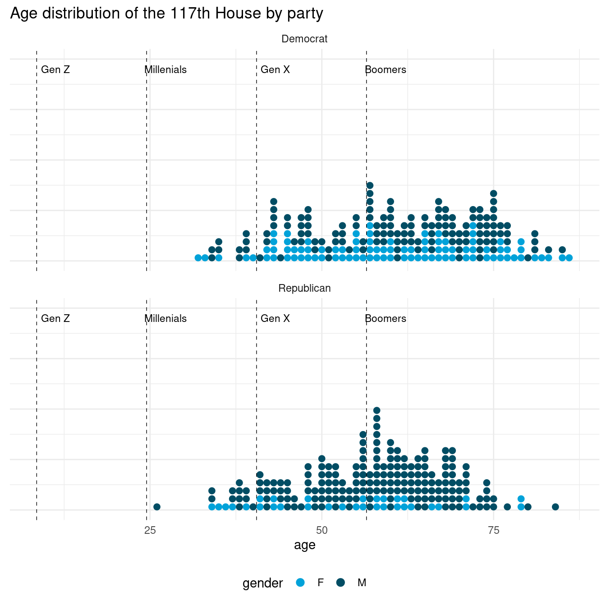

leg_dets <- 'https://theunitedstates.io/congress-legislators/legislators-current.csv'
details <- read.csv((url(leg_dets)), stringsAsFactors = FALSE)
details$birthday <- as.Date(details$birthday)
k1 <- c('bioguide_id',
'party',
'birthday',
'gender',
'senate_class',
'twitter',
'wikipedia_id')
A quick look at age and generation distributions of members of the US House of Representatives.
1 Current US lawmakers
nominate <- Rvoteview::download_metadata(type = 'members',
#chamber = 'house',
congress = '117') |>
subset(chamber != 'President')
k2 <- c('bioguide_id',
'congress',
'chamber',
'district_code',
'state_abbrev',
'bioname',
'nominate_dim1',
'nominate_dim2')members <- merge(x = details[,k1],
y = nominate[,k2],
by = "bioguide_id",
all.y = TRUE)
members$age <- trunc(as.numeric(difftime(Sys.Date(),
members$birthday,
units = "days")) / 365.25)2 American Generations
generation <- c('Greatest',
'Silent',
'Boomers',
'Gen X',
'Millenials',
'Gen Z',
'Post-Z')
start_yr <- c('1912-01-01',
'1928-01-01',
'1946-01-01',
'1965-01-01',
'1981-01-01',
'1997-01-01',
'2013-01-01')
end_yr <- c('1927-12-31',
'1945-12-31',
'1964-12-31',
'1980-12-31',
'1996-12-31',
'2012-12-31',
'2028-12-31')Note that zero members of Gen Z are old enough to serve in the US House of Representatives– and all Millenials now are.
pgs <- data.frame(generation = factor(generation,
levels = unique(generation)),
start = as.Date(start_yr),
end = as.Date(end_yr))
pgs$youngest <- trunc(as.numeric(difftime(Sys.Date(),
pgs$end,
units = "days")) / 365.25)
pgs |> knitr::kable()| generation | start | end | youngest |
|---|---|---|---|
| Greatest | 1912-01-01 | 1927-12-31 | 94 |
| Silent | 1928-01-01 | 1945-12-31 | 76 |
| Boomers | 1946-01-01 | 1964-12-31 | 57 |
| Gen X | 1965-01-01 | 1980-12-31 | 41 |
| Millenials | 1981-01-01 | 1996-12-31 | 25 |
| Gen Z | 1997-01-01 | 2012-12-31 | 9 |
| Post-Z | 2013-01-01 | 2028-12-31 | -6 |
2.1 Assign generations
members$generation <- pgs$generation[
findInterval(x = members$birthday, vec = pgs$start)]library(dplyr)
Attaching package: 'dplyr'The following objects are masked from 'package:stats':
filter, lagThe following objects are masked from 'package:base':
intersect, setdiff, setequal, unionmembers |>
filter(chamber == 'House' & !is.na(age)) |>
count(party, gender, generation) |>
tidyr::spread(generation, n) |>
knitr::kable()| party | gender | Silent | Boomers | Gen X | Millenials |
|---|---|---|---|---|---|
| Democrat | F | 11 | 40 | 34 | 5 |
| Democrat | M | 9 | 75 | 37 | 9 |
| Republican | F | 2 | 13 | 11 | 6 |
| Republican | M | 3 | 98 | 64 | 13 |
2.2 Dotplot
library(ggplot2)
members |>
filter(chamber == 'House' & !is.na(age)) |>
ggplot() +
geom_dotplot(aes(x = age,
color = gender,
fill = gender,),
method="histodot",
dotsize = .9,
binpositions = 'all',
stackratio = 1.3,
stackgroups=TRUE,
binwidth = 1) +
geom_vline(xintercept = pgs$youngest[2:5] - 0.5,
linetype =2,
color = 'black',
size = .25) +
geom_text(data = pgs[2:5,],
aes(x = youngest + 2.25,
y = 0.95,
label = generation),
size = 3) +
theme_minimal() +
ggthemes::scale_fill_economist() +
ggthemes::scale_color_economist() +
facet_wrap(~party, nrow = 2) +
theme(legend.position = "bottom",
axis.title.y=element_blank(),
axis.text.y=element_blank()) +
#ylim (0, .5) +
labs(title = "Age distribution of the 117th House by party")